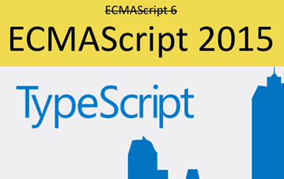
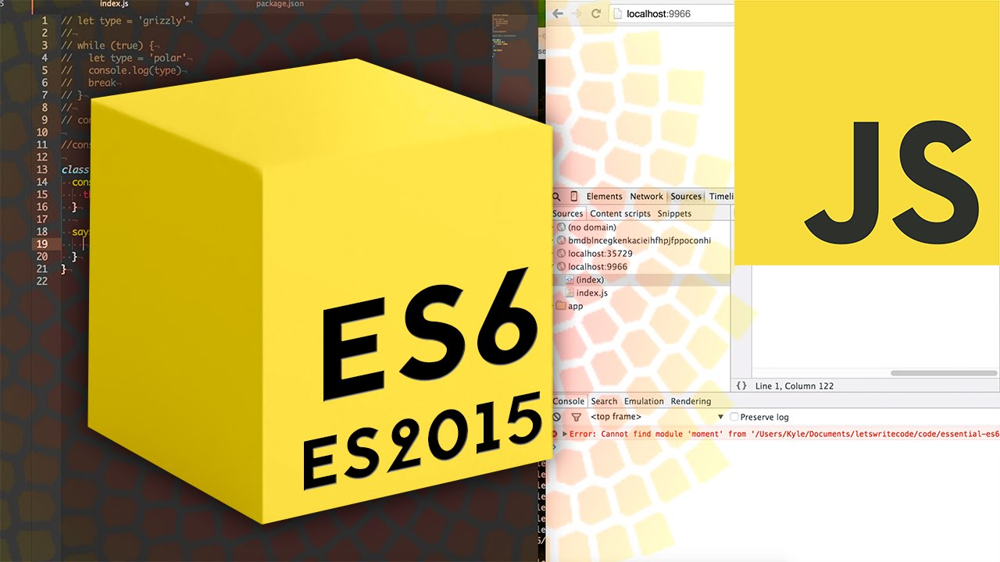

- First version shipped with Netscape Navigator, August 19, 1996
- Before Netscape went down, they started the standard ECMAScript with the purpose of guiding the path for future JavaScript
- ECMAScript had a few releases in the years 1997 - 1999 (ES1- ES3) and then went into hibernation for the next 10 years
- During this 10 years, Microsoft dominated the scenes but at the same time they weren't improving their product and hence Firefox was born and a whole heap of other browsers such as Chrome, Opera.
- ECMAScript released it's 5th edition ES 5 in 2009 (the version we have being using up until now)
- ES 6 (es2015) was released June 2015
- ES 7 (es2016) was feature frozen June 2016
- ES 8 (es2017) expected to release 2017
Note: The future is already here!
JavaScript - a little bit of history 1
JavaScript - a little bit of history 2
In a perfect world, we would all use es2015 (the now official name for ES 6) getting ready to move toward es2016
However, far from all browser understand es2015, especially not for users running older versions (of both OS and Browser)
Even on the server side (with NodeJS) we don't have full support if we wan't to stick to the LTS releases
Because of this and the (pre es2015) long periods between new releases a number of alternative solutions were invented,all adding syntactic sugar on top of ES 5
- Typescript: transpiles TypeScript → ES 5
- CoffeeScript: transpiles CoffeeScript → ES 5
- ( BabelJS: transpiles es2015 → ES 5 )
This has also lead to the prediction that JavaScript will end up as (or is) the Virtual Machine Language of the WEB, used by other, more complete languages, to transpile into
Which technology should we go for?
Assuming our goal is to use our knowledge for future employment :-)
As of now it seems like the most "future-safe" choices are to go, either the official ECMAScript way (es2015 →) or to use Typescript
es2015 →
The natural evolution of JavaScript, bringing features like arrow functions, Classes and Inheritance, promises, Generators and much more.
Can be used in "all" browsers using a polyfil or a transpiler
Can be used with NodeJS (almost) out of the box with LTS v6.x, otherwise via a transpiler (Babel)
Available out of the box with newer versions of ReactJS
Typescript
A free open source language, developed and maintained by Microsoft. It is a strict superset of JavaScript, and adds optional static typing and many of the features from es2015 and es2016
Can (obviously) be used in all browsers when compiled into ES5
Can be used with NodeJS with a typescript compiler
Angular 2 is designed to be written with TypeScript (but can also be used with ES 5 and es 2015)
We will focus on both es2015 and Typescript via a number of exercises in this period
es2015
This link will be the main resource for es2015 features . Use it as a reference for most of the exercises
Next week we will dig deeper into topics like promises and Generators and how to use these features to simplify asynchronous programming
Setting up WEbStorm for es2015 Development
Use this link for information
Transpiling in
Webstorm
- Node version LTS v6.x → You (most likely) only need the step "set ECMAScript 6 as the JavaScript version"
- Node version LTS v4.x → You need the step above + the step "Setting up Babel File Watcher"

es2015 - Getting started

ECMAScript2015 - Selected Topics
Iteration Protocols
A couple of additions to ECMAScript 2015 (ES6) aren't new built-ins or syntax, but
protocols.
These protocols can be implemented by any object respecting some conventions.
There are two protocols: The iterable protocol and the iterator protocol
The Iterable Protocol
The iterable protocol allows JavaScript objects to define or customize their
iteration behavior, such as what values are looped over in a for..of construct. Some built-in types are built-in
iterables with a default iteration behavior, such as Array or Map,
while other types (such as Object) are not.
The Iterator Protocol
The iterator protocol defines a standard way to produce a sequence of values (either finite or infinite).
See here for details Iteration protocols
Iteration Protocols - Simple Examples
Example implementing the iterator protocol
function makeIterator(array) {
var nextIndex = 0;
return {
next: function () {
return nextIndex < array.length ?
{value: array[nextIndex++], done: false} :
{done: true};
}
}
}
//Here we can do:
let it = makeIterator(['yo', 'ya']);
console.log(it.next().value); // 'yo'
console.log(it.next().value); // 'ya'
console.log(it.next().done); // true
Example implementing the iterable (and thereby also the iterator) protocol
function makeIterator2(array) {
var itt= {};
itt[Symbol.iterator] = function() {
var nextIndex = 0;
return {
next: function () {
return nextIndex < array.length ?
{value: array[nextIndex++], done: false} :
{done: true};
}
}
}
return itt;
}
//Here we can iterate using the for-of syntax:
var it2 = makeIterator2(['yo', 'ya']);
for(let i of it2){
console.log(i);
}
Generators
Generators provide a powerful alternative to custom iterators: they allow us to define an iterative algorithm by writing a single function which can maintain its own state.
A generator is a special type of function that works as a factory for iterators. A function becomes a generator if it contains one or more yield expressions and if it uses the function* syntax.
Simple Generator Function
function* gen() {
yield "Hello";
yield "es2015";
yield "Generators";
}
The generator function returns a Generator object which conforms to both the iterable and the iterator protocol.
let g = gen();
//Using the iterator protocol
console.log(g.next().value); // Hello
console.log(g.next().value); // ES2015
console.log(g.next().value); // Generators
//using the iterable protocol
for(let i of gen()) {
console.log(i);
}
Generators another (infite) example
function* idMaker(){
var index = 0;
while(true)
yield index++;
}
var gen = idMaker();
console.log(gen.next().value); // 0
console.log(gen.next().value); // 1
console.log(gen.next().value); // 2
for(let i of gen){
console.log(i);
if(i === 5) //Will continue "forever" without this
break;
}
Rest of today; Exercises :-)